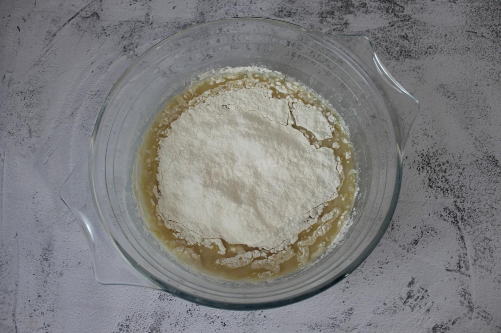
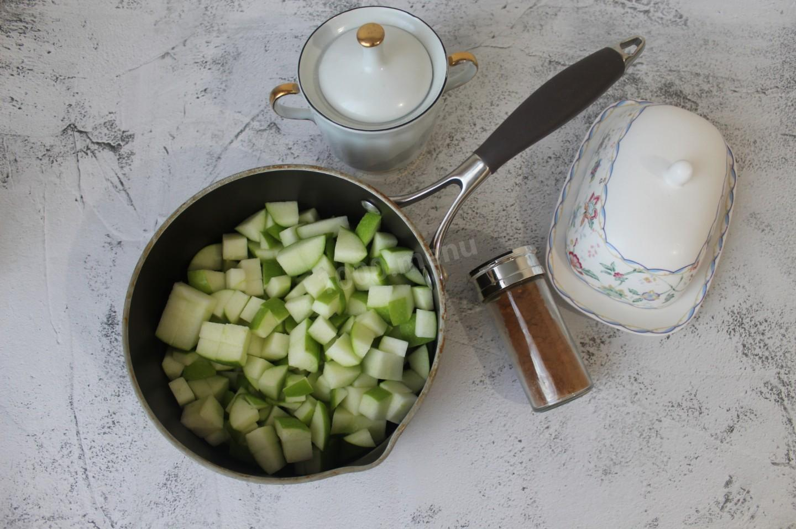
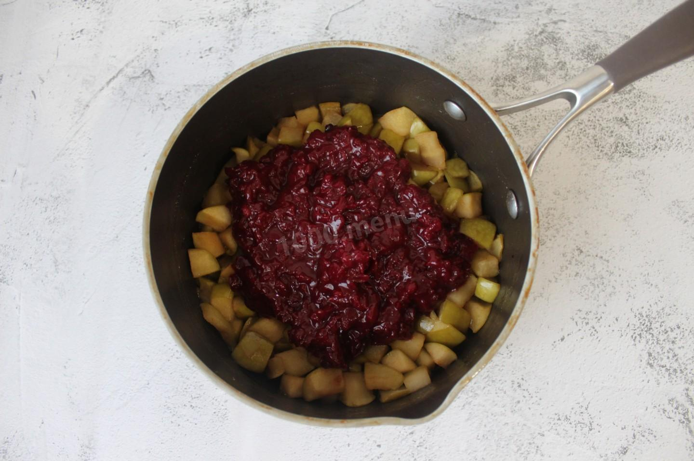
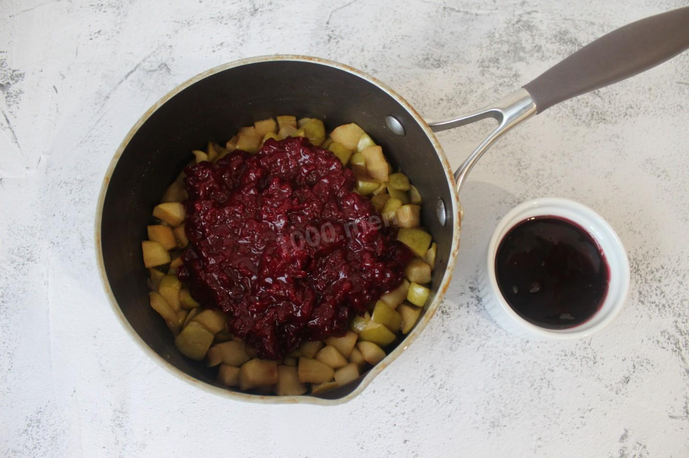
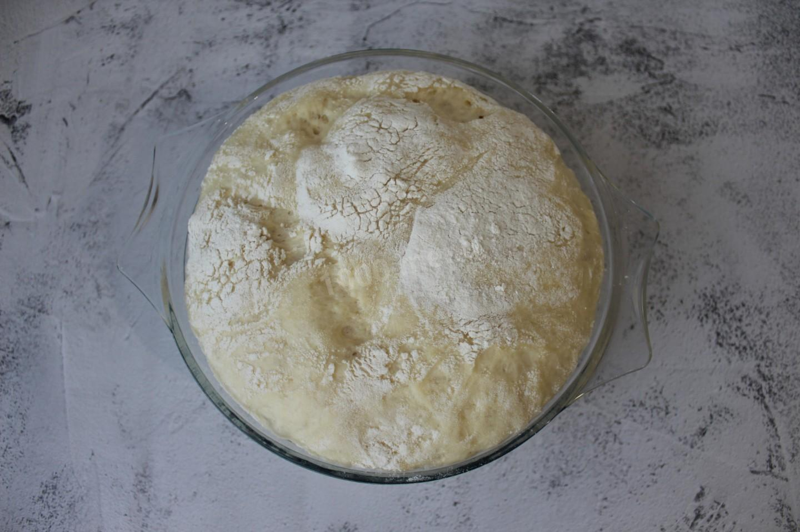
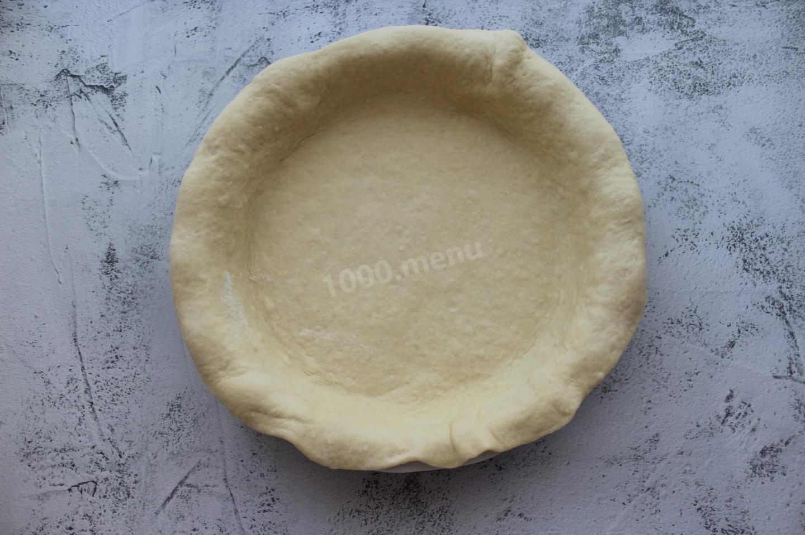
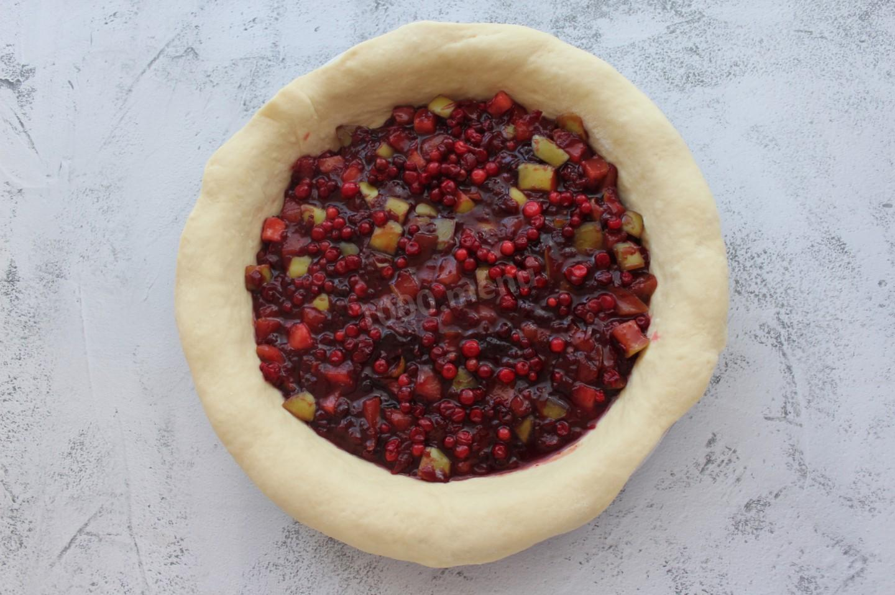
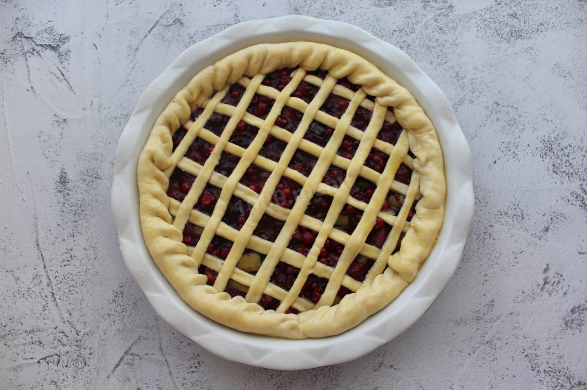

Ароматный медово-пряный пирог для семейного чаепития! Зимняя выпечка - особенная, она наполнена ароматами пряностей, меда и цитрусовых. Дополнительный аромат этому пирогу придают ягоды брусники и красное вино. Кусочек такого пирога с чашечкой ароматного горячего чая согреет Вас в холодный зимний вечер.
Порция рассчитнана на 10 порций (кусков)
Для теста:
Для начинки:
Для смазывания:

В чуть теплое молоко (30℃) вбиваем яйцо и аккуратно перемешиваем венчиком, не взбивая массу. Затем всыпаем сахар и дрожжи и перемешиваем до тех пор, пока они не растворятся. Вливаем растительное масло и снова перемешиваем венчиком. Начинаем вводить просеянную через сито муку с солью. Перемешивая тесто сначала деревянной ложкой, а затем вымешивая его руками. Тесто должно быть немного липким. Накрываем тесто полотенцем и ставим его в теплое место на 1 час.

Яблоки моем, обсушиваем и нарезаем небольшими кубиками. Перекладываем их в сотейник. Нарезанные яблоки слегка обжариваем на сливочном масле. Затем всыпаем сахар и корицу, перемешиваем и продолжаем обжаривать пока, сахар не начнет карамелизоваться.

На очень мелкой терке натираем цедру всего апельсина, из мякоти выжимаем сок, используя ручную соковыжималку. Бруснику (250 гр.) промываем под водой и перекладываем в сотейник, добавляем мед, цедру и сок апельсина. Ставим сотейник на огонь, перемешиваем все ингредиенты и готовим соус в течение 10 минут. После чего половину соуса измельчаем в бленедере и снова перекладываем в сотейник, варим соус еще 15 минут. Горячий соус перекладываем к яблокам.

В этот же сотейник добавляем вишневый джем. Желательно, чтобы джем был с цельными ягодами. Перемешиваем содержимое сотейника. Начинка для пирога готова.

За это время тесто должно было подняться как минимум в 2 раза. Присыпаем немного мукой и обминаем тесто, чтобы вышли излишки углекислого газа.

Отрезаем большую часть теста, оставив немного теста для выполнения сеточки на пироге. Из большой части раскатываем большой круг и перекладываем его на смазанную растительным маслом круглую форму для выпекания. Формируем дно и бортики будущего пирога.

Выкладываем начинку и равномерно распределяем ее по всему пирогу, сверху посыпаем оставшимися ягодами брусники (50 гр.).

Из оставшегося теста раскатываем небольшой пласт и нарезаем его узенькими полосочками. Эти полосочки выкладываем на пирог, создавая сеточку. Аккуратно заворачиваем боковинки пирога. Смазываем сеточку и бортик пирога взбитым яйцом. Выпекаем пирог в разогретой до 180℃ духовке 25-30 минут.